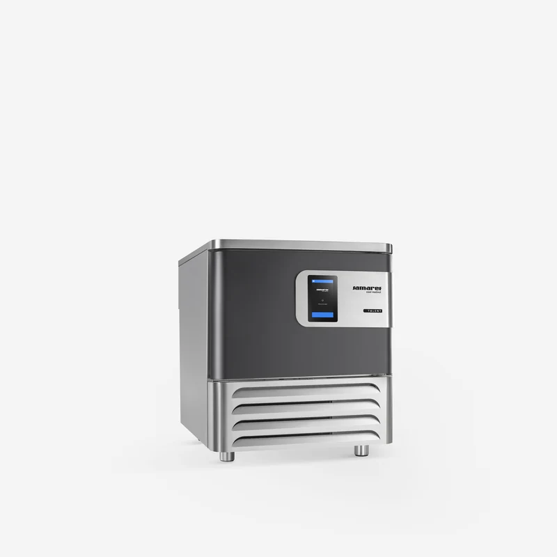

Abatidores-Ultracongeladores
TalentTA 6T P BK
Para el obrador que necesita enfriar o ultracongelar una elaboración por lotes.
- Rendimiento de +90 °C a +3 °C
- 30 kg
- Rendimiento de +90 °C a −18 °C
- 25 kg
- Volumen bruto
- 159 l
Instalación y características
- Ancho × fondo × alto
- 800 × 750 × 840 mm
- Potencia frigorífica
- 1707 W
- Alimentación
- 230 V · monofásica · 50 Hz
- Refrigerante
- R290